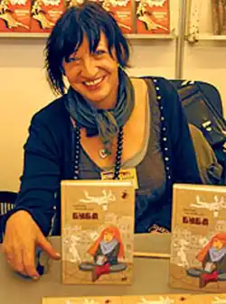

Барбара Космовська (24 січня 1958, Битув, Поморське воєводство) — польська письменниця, авторка роману "Українка" (2013).
Деякий час працювала вчителем польської мови в Битові.
1999 — захистила кандидатську дисертацію на тему "Між дитинством і дорослим життям. Про романи Зофії Урбановської". Дисертаційна робота стосувалася польської літератури періоду позитивізму й була відзначена дипломом Summa cum laude ("За найкращу роботу"). Зараз працює на посаді кафедри історії літератури романтизму й позитивізму в Поморській академії (Слупськ). Її наукові зацікавлення — передусім література позитивізму та дитяча й молодіжна література (співпрацює із журналом Guliwer, присвяченим цій проблематиці). Депутат міської ради в Битові. Літературний дебют припав на роки навчання в ліцеї (1970-ті роки). Перші спроби опубліковані в нечинному нині журналі Na przełaj ("Навпростець"). У 1980-ті здобула численні премії на поетичних конкурсах. Дебютний роман — "Голодна кицька" (2000). Наступні романи: "Приватна територія" (2001), "Провінція", "Гобелен" та "Буба" (всі 2002), "Угору річкою" (2003), "Блакитний автобус" (2004). Авторка книжки "Думчики" (2005), романів "Бляшанка" та "Буба — мертвий сезон". Бібліографія 2000 – Głodna kotka (Голодна кицька) 2001 – Teren prywatny (Приватна територія) 2002 – Prowincja (Провінція) 2002 – Gobelin (Гобелен) 2002 – Buba (Буба), укр. пер. 2010 2003 – W górę rzeki (У верхів'я річки) 2004 – Niebieski autobus (Блакитний автобус) 2005 – Myślinki (Думчики) 2007 – Buba: Sezon ogórkowy (Буба: мертвий сезон), укр. пер. 2011 2007 – Pozłacana rybka (Позолочена рибка), укр. пер. 2012 2008 – Hermańce (Германьці) 2008 – Puszka (Бляшанка) 2011 – Samotni.pl (Самотні.pl) 2011 – "Українка" (Ukrainka)